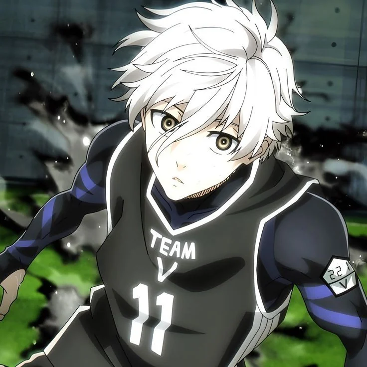
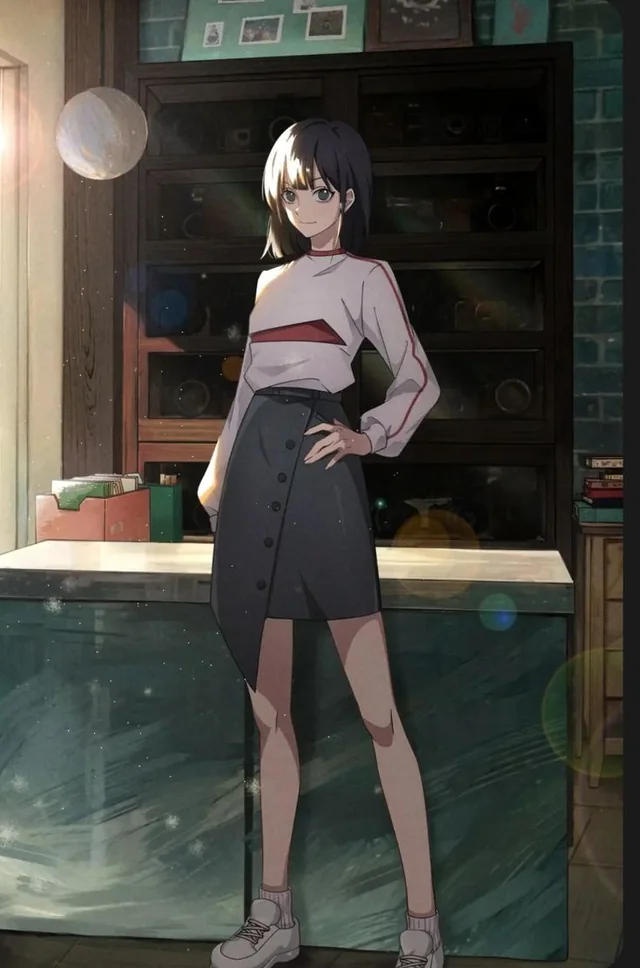
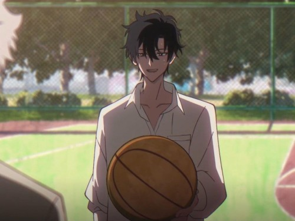

Shoyo Hinata

Shoyo Hinata would be the perfect member to the dodgeball team because of his high jump and defense ability. He can also catch the ball soaring from the opponent's team because of his years of experience playing for the Karasuno High School boys' volleyball team. He played against many teams and learned different techniques to defend againt many different attacks. His posistion was the middle blocker and he has a lot of team spirit. I think he would be great as the defense of the team while occasinally showing his secret move which revolves around his extraordinary vertical jump and unique spiking abilities, such as the "minus-tempo quick strike" and "block out". His initial lack of technical skill is compensated for by his incredible athleticism, speed, and adaptability.
Seishiro Nagi
Seishiro Nagi would be perfect for this dodgeball team because he has the skills of soccer and is some what of a egoist himself. He has a techniques that are centered around his incredible, once-in-a-generation ball control and first touch. His key skills include various traps, such as the "Creative Trap" (flicking the ball over a defender) and the "Black Hole Trap" (absorbing a mid-air ball). He also uses advanced moves like the "Hand Spin Breakdance Shot," where he uses his hand on the ground for momentum to volley the ball after faking a shot. I think this would come in handy a lot as the offense of the team.
Qiao Ling
Qiao Ling would make a great addition to the dodgeball team because of her ability to make quick precise movement this would come in handy to be able to hold her own with teammates like Hinata and Nagi backing her up. Her personal fighting style is grounded and effective, relying on self-defense skills she uses. She would be able to doge affectively and be able to put power in the ball to send it flying back. She is a great fighter and has had many times where her fast reflexes cam in handy. She also possess a special unique power she inherited which allows her to predict moves so that would also help her abilty to see what the opponent might try and protect her teammates.
Tobio Kageyama

Tobio Kageyama would be an amazing pick for the dodgeball team because he has played with Hinata on the same team for years. He started of as someone who bossed around his team and yelled if they made a mistake or lost the ball. He had no teamwork dispite being the team captain. However after joining Hinata's team he learned to work with the others in other to let everyone's strenths shine and win games. He and Hinata worked on the special move for years refining it and making it perfect. His position is setter in volleyball so the move revolved around him tossing the ball up in the air to one member but hinata from the opposite side would run across as their decoy and spike it. This would work with Nagi and Cheng Xiaoshi as potental distactions. Kageyama would be the perfect offense of the team.
Cheng Xiaoshi
Cheng Xiaoshi would make a great teammate of the dogeball team because he has quick reflexes and train for a year in a martial arts dojo run by Liu Siwen. He taught Cheng Xiaoshi all of his his fighting abilities including the shoryuken. He has really fast reflexes and can dodge anything coming at him. He fought again many fighter and his abilities has improved a lot. His ability to think quick on his feet and make sure mothing happened to his teammates would make him the perfect offense and defense of the team. His skills in basketball would also help since he played for his highschool team for year before graduating. He has great trust in his teammates and that's wat allows him to make such daring moves that the opponent wouldn't see coming. He looks all over the court and analyzes where each member is quickly while make his move.